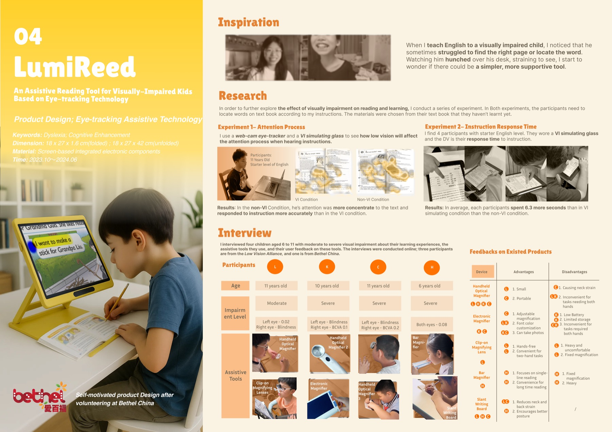
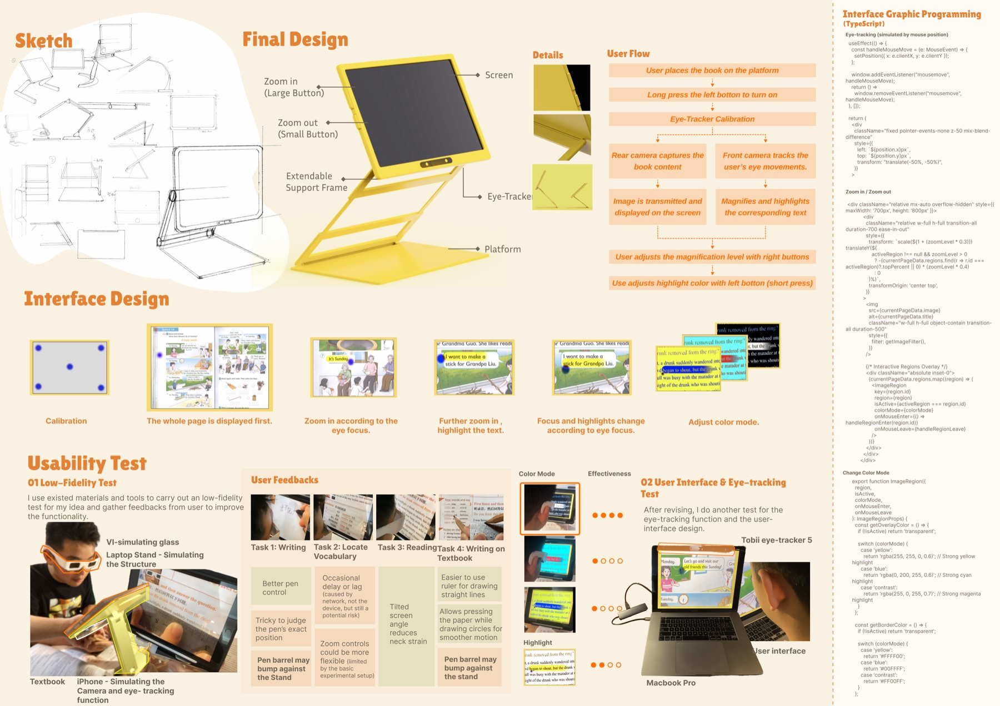

INDEX / 04
LumiReed
Assistive Product · 2023.10 — 2024.06
An eye-tracking assistive reading tool for visually-impaired children. Two controlled experiments with VI-simulating glasses, interviews with four children aged 6–11, and a final screen-based device that follows the child's gaze to zoom, highlight and recolour text. Validated with low-fi tests and a Tobii eye-tracking session.

